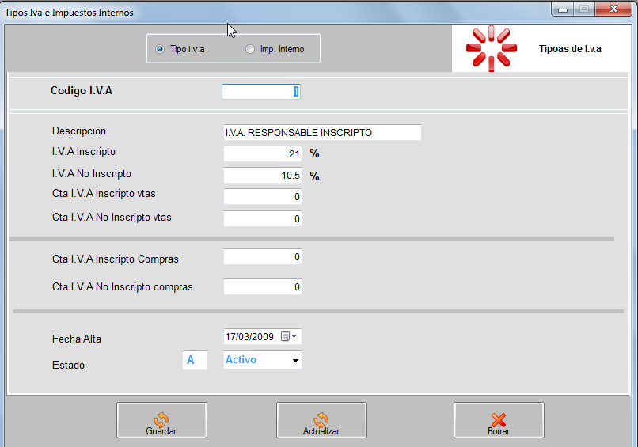
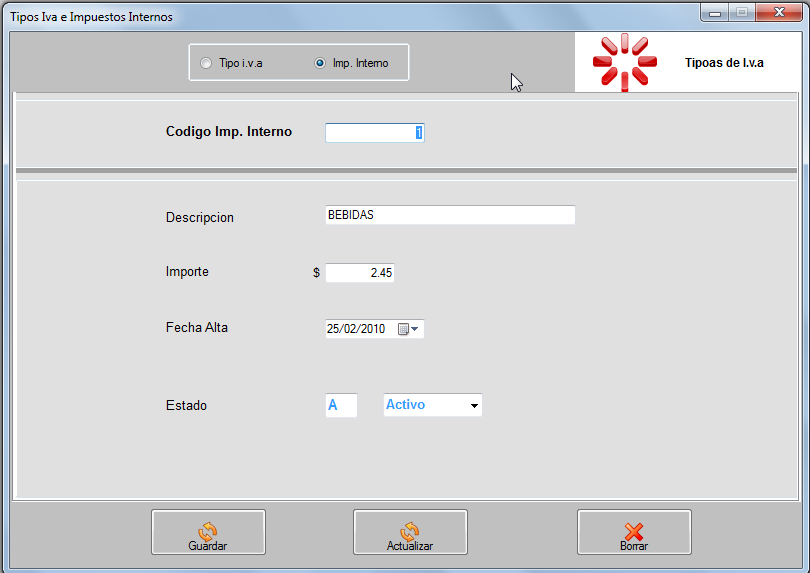

IVA, IMPUESTOS INTERNOS
En este formulario cargamos y modificamos todo lo que sea iva e impuestos internos.Podemos observar arriba un grupo de opciones: Tipo iva e Imp. inetrnos.En tipo de iva tenemos la casilla codigo iva para ingresar un valor numerico , descripcion para detallar el tipo y mas abajo vemos las casillas para ingresar otros valores como valor del iva , la cuenta a la que pertenece en vtas y en compras, la fecha de alta y el estado del movimiento

En la opcion Imp. internos Tenemos la casilla codigo imp. interno para ingresar un valor numerico, descripcion para detallar en imp. interno, importe que sera el valor que se le dara a ese impuesto y fecha de alta.

Guardar: Para efectuar los cambios realizados en la tabla.
Actualizar: Selecionamos un item en la grila y le damos enter, apareceran los valores en las casillas mas arriba para su correcion luego presionamos modificar
Borrar: Seleccionamos un item en la grilla y luego presionamos el boton borrar